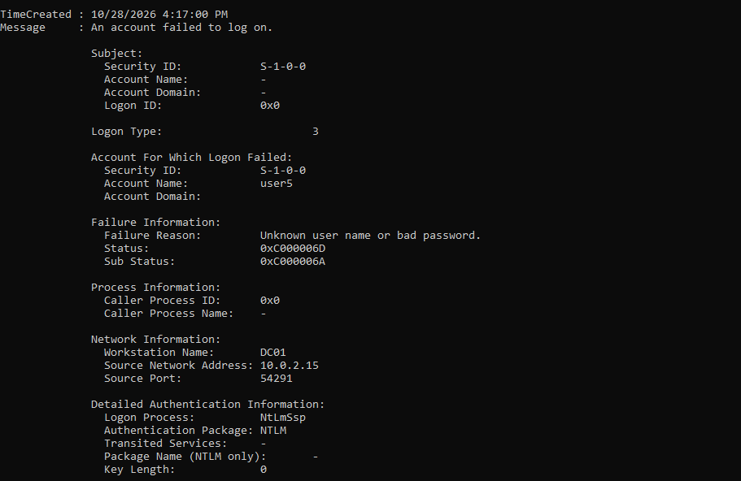
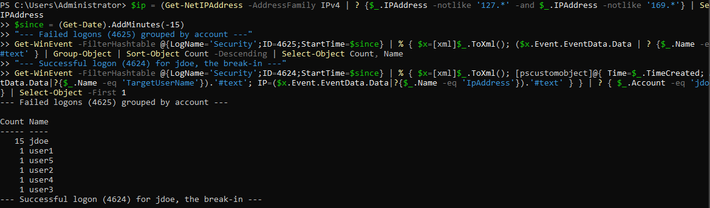
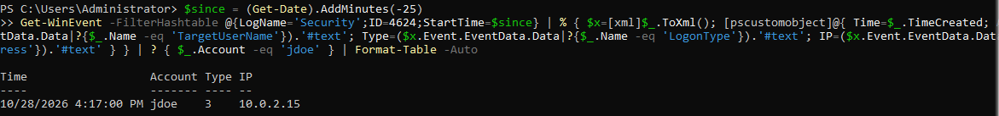

Lab 07: Brute Force and Spraying on a Real Active Directory Domain¶
Outcome: Lab 05's detection, proven on a real domain
Lab 05 tested brute force detection logic against a hand-built dataset. Here I built a real Active Directory domain, ran a real brute force, spray, and successful break-in against it, and confirmed the attack chain in the live Windows Security log: a burst of failures and a successful logon from the same source, same account.
In plain English
What this is: I built a small pretend company network (a Windows server that manages logins, like a real company's) inside my own PC, then played both attacker and defender. I guessed a user's password until I got in, and checked that the server's logs recorded the whole thing.
Why it matters: Lab 05 proved my detection logic worked on data I typed by hand. This proves it works on real logs from a real domain, which is the environment a SOC analyst actually defends.
What I did: Stood up a Windows Server domain controller, created user accounts, turned on login auditing, then ran a brute force against one account, a password spray across several, and a successful login with the guessed password. Then I analyzed the real events.
Result: The full attack chain showed up in the logs exactly as the detection expects: 15 failures against one account, single failures across five others, and a successful login from the same IP that did the guessing.
Skills this lab shows: Active Directory Windows Server Group Policy auditing PowerShell Windows event analysis Detection validation
Key terms in this lab
- Active Directory: Microsoft's system for managing all users and logins in a company network
- Domain controller: the server that runs Active Directory and checks every login
- Brute force: guessing one account's password over and over
- Password spraying: trying one common password across many accounts
- NTLM: an older Windows login protocol that records a source IP in the logs
Every term is explained in the Glossary.
1. The Lab I Built¶
A single Windows Server 2022 virtual machine, promoted to a domain controller for a test domain called lab.local. It runs on an isolated VirtualBox network that touches nothing real.
| Component | Detail |
|---|---|
| Host | DC01, Windows Server 2022, domain lab.local |
| Accounts | jdoe (the target) plus user1 to user5 |
| Auditing | Logon success and failure enabled via auditpol |
| Attacker | Generated locally, so the "attacker" and the target are the same host |
| Source IP in logs | 10.0.2.15, the server's own network address |
Single-host lab, stated plainly
Because this runs on one machine, the attack comes from the server's own IP rather than a separate attacker box. The events, protocols, and detection logic are identical to a multi-machine network. Running it across separate VMs is the next step, limited only by the 8 GB of RAM on my PC.
2. Setting Up the Domain¶
After promoting the server to a domain controller, I created the accounts and turned on auditing with PowerShell:
# Create the target and five more users
$pw = ConvertTo-SecureString "Str0ngLabP@ss1" -AsPlainText -Force
1..5 | % { New-ADUser -Name "user$_" -SamAccountName "user$_" -AccountPassword $pw -Enabled $true }
New-ADUser -Name "jdoe" -SamAccountName "jdoe" `
-AccountPassword (ConvertTo-SecureString "Autumn2026" -AsPlainText -Force) -Enabled $true
# Turn on logon auditing (produces 4624 and 4625)
auditpol /set /subcategory:"Logon" /success:enable /failure:enable
3. A Lesson in How Domain Controllers Log¶
My first test failed to produce a single Event ID 4625, and the reason is worth knowing.
When I connected to the server by its name (\\DC01), Windows used Kerberos. A bad password over Kerberos is logged on a domain controller as Event ID 4771 (Kerberos pre-authentication failed), an "Account Logon" event, not the 4625 "Logon" event my rule hunts.
To generate a real 4625, I connected by IP address instead. An IP has no Kerberos identity, so Windows falls back to NTLM, and an NTLM network-logon failure writes a true 4625 with a source IP:

Takeaway: the protocol decides the event. Kerberos failures land in 4771, NTLM failures in 4625. A detection that only watches 4625 misses Kerberos-based guessing, which is why a real SOC also watches 4771 and 4776.
4. Running the Attack¶
Three stages, all generating real events on the domain:
$ip = "10.0.2.15"
# 1. Brute force: 15 wrong passwords against jdoe, then the real one
1..15 | % { net use "\\$ip\IPC$" /user:jdoe "Wrong$_" 2>$null; net use "\\$ip\IPC$" /delete /y 2>$null }
net use "\\$ip\IPC$" /user:jdoe "Autumn2026" # the break-in
net use "\\$ip\IPC$" /delete /y
# 2. Password spray: one guessed password across many accounts
"user1","user2","user3","user4","user5" | % { net use "\\$ip\IPC$" /user:$_ "Password1" 2>$null; net use "\\$ip\IPC$" /delete /y 2>$null }
The line with Autumn2026 returned "The command completed successfully." That is the break-in: the password was guessed, and it wrote a 4624 success event.
5. What the Logs Showed¶
Failures grouped by account¶
Reading the real Security log the way an analyst would, grouping 4625 events by target account:

This single table separates the two techniques cleanly:
| Account | Failures | Technique |
|---|---|---|
jdoe |
15 | Brute force against one account |
user1 to user5 |
1 each | Password spray across many accounts |
The break-in¶

The complete chain: 15 failures for jdoe from 10.0.2.15, immediately followed by a success for jdoe from 10.0.2.15. That failure-then-success from one source is the exact pattern the Lab 05 rule was built to catch, now confirmed on real domain telemetry rather than a hand-built table.
6. The Detection, Against Real Data¶
The Lab 05 KQL correlates failures with a success from the same source. Here is that logic expressed against this real data. In Microsoft Sentinel's SecurityEvent schema it is the same rule from the Detections library:
let failures = SecurityEvent
| where EventID == 4625 and LogonType in (3, 10)
| where SubStatus in~ ("0xc000006a", "0xc0000064")
| where IpAddress !in ("-", "127.0.0.1", "::1")
| summarize FailureCount = count(), LastFailure = max(TimeGenerated),
AccountsTried = make_set(TargetUserName, 50) by IpAddress, Computer
| where FailureCount >= 10;
let successes = SecurityEvent
| where EventID == 4624 and LogonType in (3, 10)
| project SuccessTime = TimeGenerated, IpAddress, Computer, SuccessAccount = TargetUserName;
failures
| join kind=inner successes on IpAddress, Computer
| where SuccessTime > LastFailure and SuccessTime < LastFailure + 10m
| project LastFailure, SuccessTime, AttackerIP = IpAddress, VictimHost = Computer, SuccessAccount, FailureCount
Against my data this returns one row: 10.0.2.15 produced 15 failures against jdoe, then a success for jdoe within the window. One alert, correctly identifying the break-in.
The companion spray rule (group by source, many accounts, few attempts each) also fires on the user1 to user5 activity.
7. Verdict and Response¶
Verdict: True Positive | High | Account compromised
jdoe was brute forced and the password was guessed. Treat the account as compromised.
If this fired in a real SOC:
- Confirm: the 4624 is Type 3 from the same IP as the failures, 23 seconds after the last failure. Not a user mistyping.
- Contain: disable
jdoeor force a password reset, kill active sessions. - Scope: check for other successes from
10.0.2.15, and any process activity underjdoeafter the logon. - Escalate: confirmed credential compromise goes to incident response.
- Prevent: enforce MFA, set an account lockout policy, and block legacy NTLM where possible. A lockout policy alone would have stopped this at 15 attempts.
8. Takeaways¶
- Real telemetry beats assumptions. The Kerberos-versus-NTLM lesson only appeared because I tested on a real domain controller, not a table I typed.
- The protocol decides the event. Kerberos guessing hides in 4771, NTLM in 4625. Watch both.
- The failure-then-success chain is the signal. One failure is noise. Fifteen failures and a success from the same source is a compromise.
- This closes the Lab 05 gap. The detection logic is now validated on real Active Directory telemetry.
9. Next Step: Lab 07 v2¶
The one piece this lab does not have is a cloud SIEM incident. The planned v2 ships these same Windows logs to a Microsoft Sentinel workspace through the Azure Monitor Agent, runs the rule there as a scheduled analytic, and captures a real Sentinel incident. The detection is already written and proven; v2 is about the ingestion pipeline.